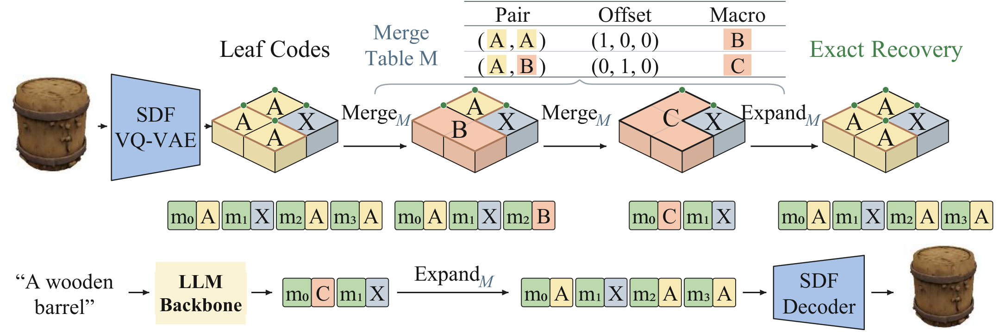

SPAC From Dense to Sparse: Morton-Ordered Sparse Mapping for Efficient 3D Mesh Generation
11 affiliations
SPAC generates the geometry. TRELLIS adds surface appearance. Shown here are three views per mesh and shortened prompts from the paper’s training-set examples.
Abstract
Generating a mesh and describing one both require a short token sequence that preserves the shape. Dense grids spend tokens on empty space, and serializing a grid can split neighboring features apart.
Sparse Proximity Aware Compression (SPAC) encodes the region near a surface, merges recurring three-dimensional patterns, and orders the resulting tokens along a Morton curve. A single autoregressive model can then read these tokens to caption an object or predict them to generate a mesh from text.
How SPAC represents a mesh
The sparse signed distance field (SDF) encoder quantizes features close to the surface. It keeps the spatial coordinate of each leaf token so the language model can connect words to geometry in both directions.

Merge spatial neighbors before serialization
3D Byte-Pair Encoding (3D-BPE) learns recurring patterns of face-adjacent tokens. Each merge records the relative offset of its parts, so the shared merge table can recover the original leaf codes and coordinates exactly. The model reads the merged tokens in Morton order for captioning. For generation, it predicts the sequence, expands the tokens, and extracts a mesh with Marching Cubes.

Compression and generation results
With 8,192 merge rules, SPAC reduces the length of the sequence processed by the language model. The comparison counts geometry, coordinates, text, and control tokens across 43,180 text-to-3D records.
- Mean reference length
- −45.4%
- 6,873.2 → 3,753.1 tokens
- Objaverse captioning
- 21.50
- METEOR, compared with 20.91 for LEO
- Text-to-3D generation
- 23.7
- Fréchet distance, compared with 25.9 for ShapeLLM-Omni

Encoder cost across resolutions
Holding the surface area and voxel-band width fixed, the sparse encoder processes a narrow band around the surface. Its measured forward cost grows approximately quadratically with input resolution.

BibTeX
@unpublished{yang2026spac,
title = {From Dense to Sparse: Morton-Ordered Sparse Mapping for Efficient 3D Mesh Generation},
author = {Yang, Junjie and Qian, Rui and Li, Yijiang and Xu, Jinyi and Yan, Yuhao
and Yi, Xinjian and Li, Yanfeng and Li, Mingxuan and Wan, Xiang and Fan, Jicong
and Liu, Siqi and Elazab, Ahmed and Wang, Changmiao},
year = {2026},
note = {Manuscript}
}